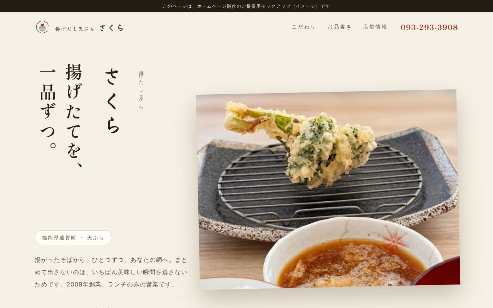
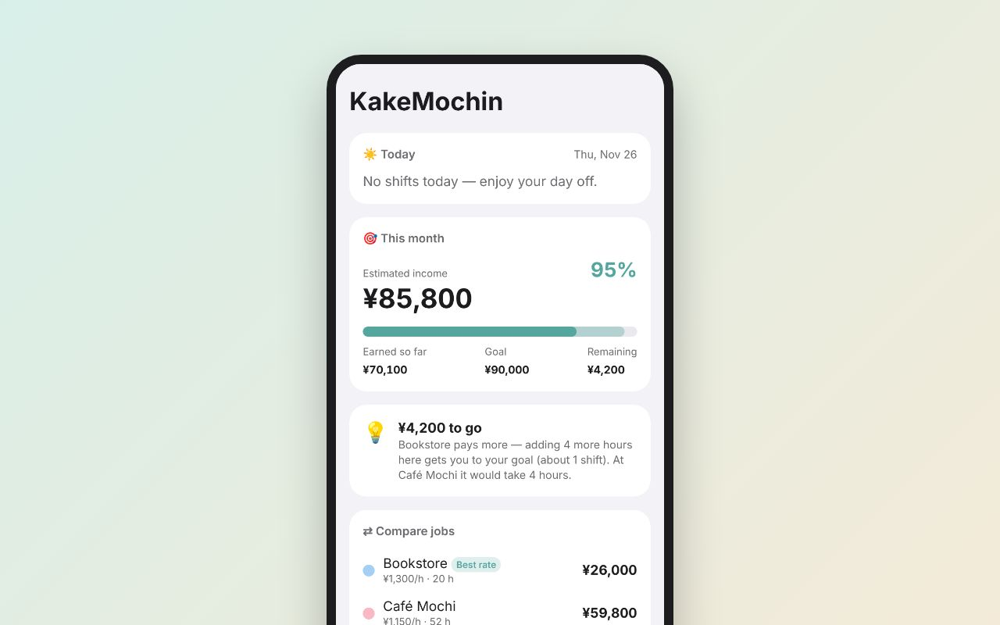

できること
書くのも、作るのも。記事作成・リライト
医療・健康を中心に、暮らし・お金・美容まで。
- 1,500〜5,000文字の記事
- リライト・校正・校閲
- 公的機関の一次情報で裏取り
SNS投稿文・台本
ショート動画の台本や、投稿キャプションを作ります。
- ショート動画台本
- Instagramなどの投稿文
- テスト案件の検収実績あり
ホームページ制作・修正
飲食店・美容室・治療院など、個人のお店向け。
- LP・1ページサイト制作
- スマホ表示の修正
- 地図・電話ボタンの設置
つくったもの
クリックで中まで見られます
天ぷら店のホームページ
福岡県の天ぷら店への提案用。縦書きの和の雰囲気。
見る
美容室のLP
黒ベースの大きな見出しで、予約まで迷わせない構成。
見る
整骨院のLP
料金・流れ・アクセス・予約までを1ページに。
見る
かけもちん（Web版）
掛け持ちバイトのシフトと収入を管理するアプリ。ブラウザでそのまま動きます。
さわってみる医療・健康の執筆サンプル
健康診断の数値の見方、脱水症状のサインと予防など。公的機関の情報をもとに書いています。
読む note制度・税金・副業の解説記事
学生納付特例、年収の壁、源泉徴収など、正確さが必要なテーマ。
読む ココナラ出品中和食・個人飲食店のホームページを作ります
スマホ対応・Googleマップ・電話ボタン込み。
見る ココナラ出品中飲食店HPのスマホ表示を直します
無料診断つき。直すべき点を分かりやすく。
見る※「サンプル」は受注した仕事ではなく、腕前を見てもらうために作ったものです。
もらった声
クラウドワークスの評価から、原文のままレスポンスも早く、納品までスムーズに進めていただき大変助かりました。
★5.0｜美容家電の紹介記事（2026年11月）とてもスムーズに、かつ丁寧にご対応いただき、とても気持ちよく進めることができました。
★5.0｜SNSショート動画の台本作成（2026年11月）素早く対応してくださりありがとうございます！
★5.0｜旅行・ホテル紹介記事評価の全文はクラウドワークスのプロフィールで見られます。
料金のめやす
ココナラの出品と同じ金額です記事作成
1円〜／文字医療・健康ジャンルは1.5円〜。テーマ・文字数・継続条件でご相談ください。テスト案件も歓迎です。
ホームページ制作
30,000円〜5ページまで・スマホ対応・地図・電話ボタン込み。先着3件のモニター価格は3ページ19,800円（レビューが条件）。
ホームページ修正
5,000円〜無料の簡易診断つき。優先度の高い3か所をまとめて直すプランは15,000円。
進め方
ぜんぶオンラインで完結ご相談
クラウドワークスかココナラのメッセージで。
お見積り
内容・納期・金額をテキストでご提案。
仮払い後に着手
仮払いを確認してから作業を始めます。
納品・修正
納品後のご要望にも対応します。
わたしについて
専門家ではありません。でも、いま専門用語を学んでいる最中だからこそ、初めて読む人がつまずく所が分かります。診断や治療方針など、医学的な判断が必要な内容はお受けしていません。
- 属性
- 男性・19歳・看護学生
- 所属
- 令和健康科学大学 看護学部 看護学科 2年
- 活動開始
- 2026年10月（クラウドワークス）
- スキル
- Webライティング／リライト／校正・校閲／SNS台本／HTML・CSS・JavaScript
- 稼働
- 週10〜20時間。平日は学業のため、主に夜と週末。
- 連絡
- 原則24時間以内に返信。オンライン面談（Zoom／Google Meet）はご相談ください。